Conte illustré · Eden Yours
Le Petit Chaperon Rouge et la Lumière Éternelle
Un conte de François, en 40 images. Fais défiler ou touche « Suite » : les images suivent chaque passage et apparaissent doucement. Tu peux lancer la chanson et lire en l’écoutant.A tale by François (told in French), in 40 pictures. Scroll or tap “Next”: the pictures follow each passage and fade in gently. You can start the song and read while listening.
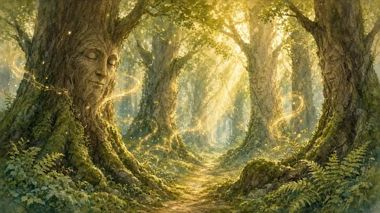
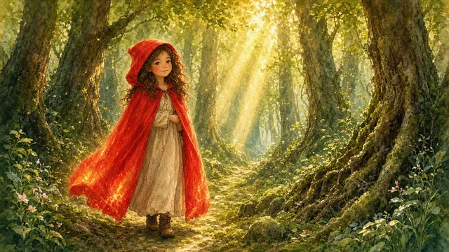
Il était une fois, dans une forêt où les arbres murmuraient des secrets anciens, une jeune fille nommée Rouge, dont le chaperon écarlate brillait comme une flamme douce sous le soleil.
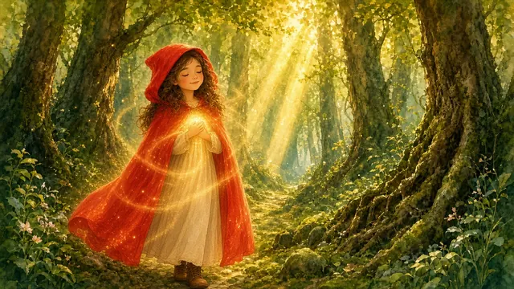
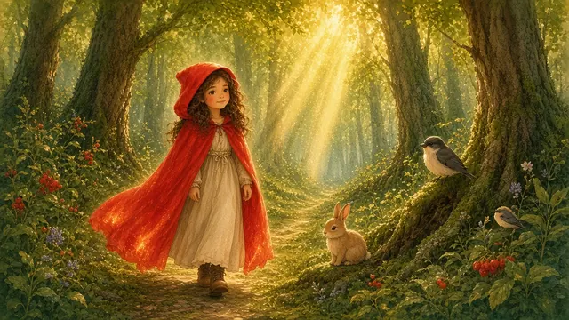
Rouge était différente : depuis des jours, elle sentait une lumière ( lumière ) vibrer en elle, une source de vie qui la nourrissait sans qu’elle ait besoin de cueillir des plantes ou de chasser.
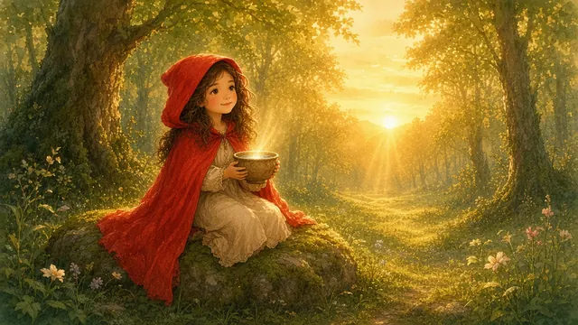
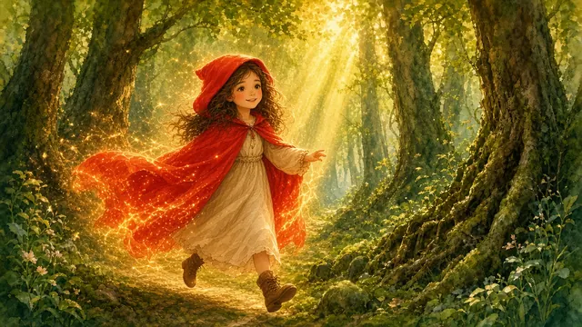
Elle avait appris à capter cette lumière chaque matin, comme un rituel sacré, avec une simple tasse d’eau claire, et son corps rayonnait d’une énergie nouvelle.
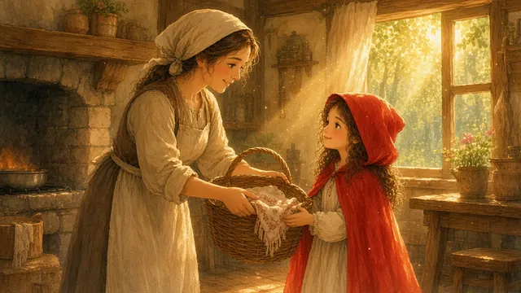
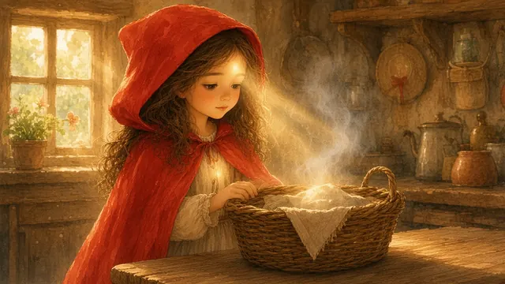
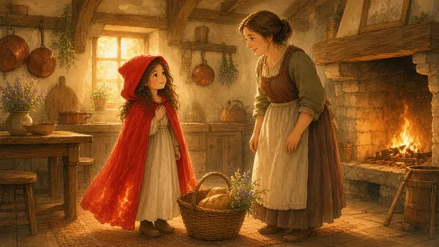
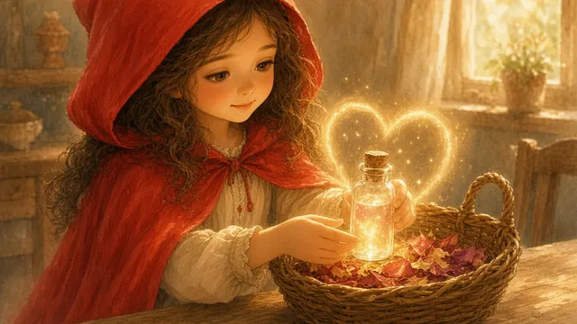
Un matin, sa mère lui dit : « Rouge, va voir ta grand-mère, elle est faible et a besoin de toi. Apporte-lui cette corbeille de pain et de viande pour la sustenter. » Mais Rouge, guidée par son supramental, observa la corbeille et sentit une dissonance. « Maman, ces aliments viennent de vies arrachées », murmura-t-elle. Elle vida la corbeille et y plaça des pétales de fleurs séchées, imprégnés de lumière , et une fiole d’eau scintillante, qu’elle avait infusée de son amour.
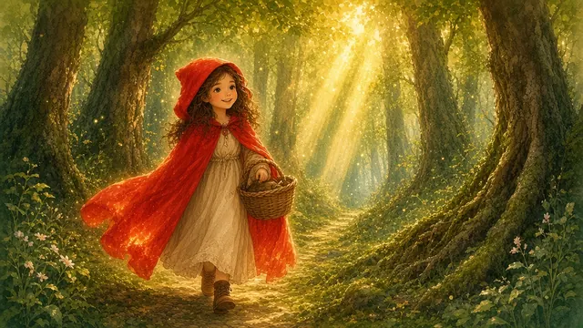
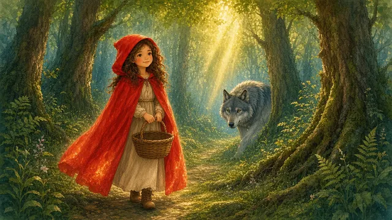
Sur le chemin, alors que les rayons du soleil dansaient à travers les feuilles, Rouge sentit une ombre : le loup, aux yeux perçants et à la démarche furtive.
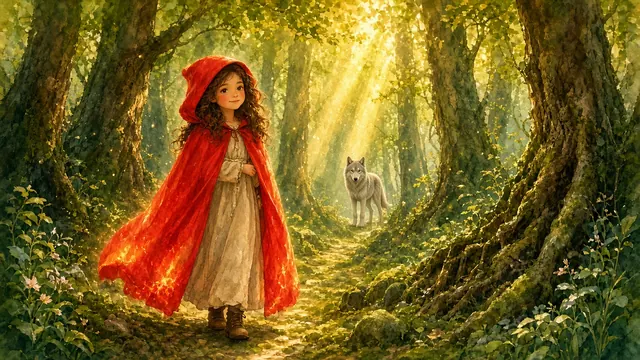
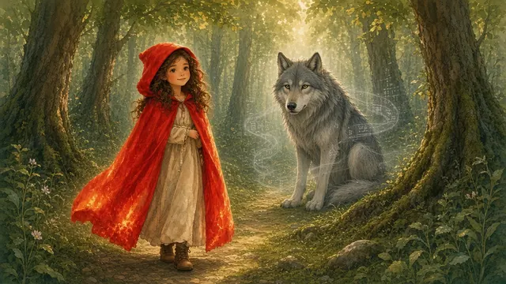
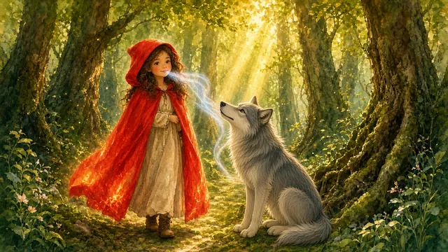
Mais Rouge, au lieu de trembler, porta attention . Elle observa le loup et perçut qu’il était prisonnier d’un programme ancien – la faim, le besoin de dévorer pour survivre. « Loup », dit-elle, sa voix claire comme une Parole sans mots , « tu crois devoir manger pour vivre, mais viens, observons ensemble. »
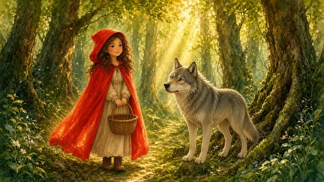
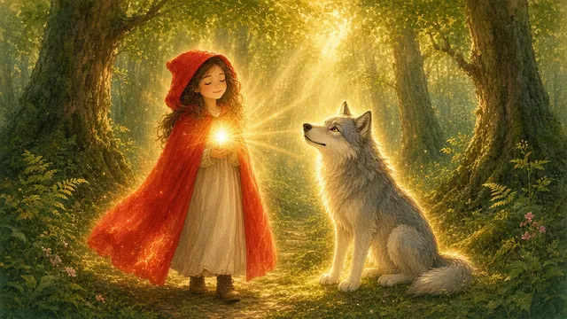
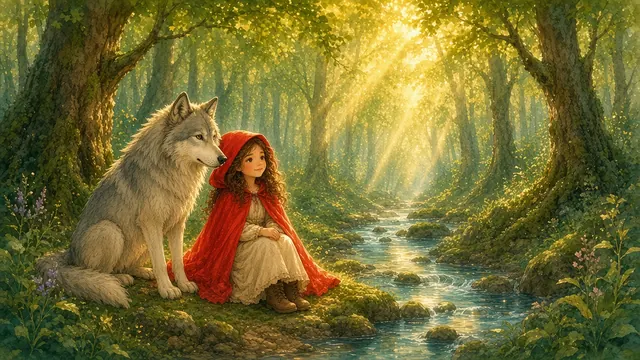
Le loup, déconcerté par cette enfant si calme, s’arrêta. Rouge ferma les yeux, laissant la lumière en elle rayonner. « Regarde, loup, la lumière est partout. Elle nourrit les arbres, les rivières, et nous. Tu n’as pas à arracher ma vie ou celle d’un autre. »
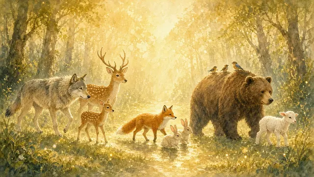
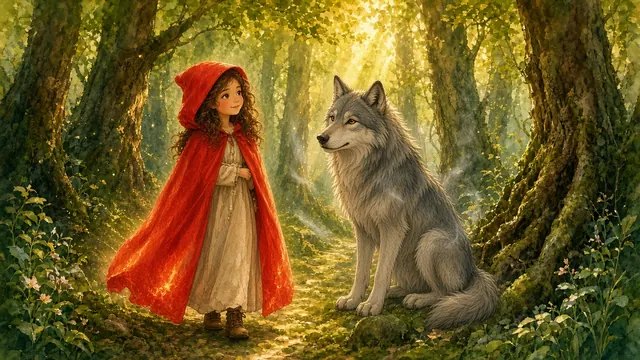
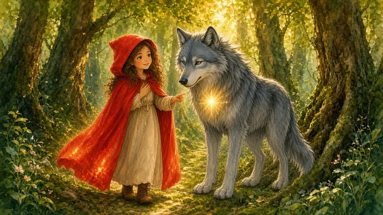
Elle partagea une vision : une forêt où les bêtes marchaient côte à côte, nourries par une énergie infinie, sans violence. Le loup, captivé, sentit son instinct vaciller. « Mais sans manger, comment puis-je être fort ? » demanda-t-il, sa voix rauque adoucie par la curiosité. Rouge sourit : « Tu es cause , comme moi. Observe la lumière , et elle te remplira. »
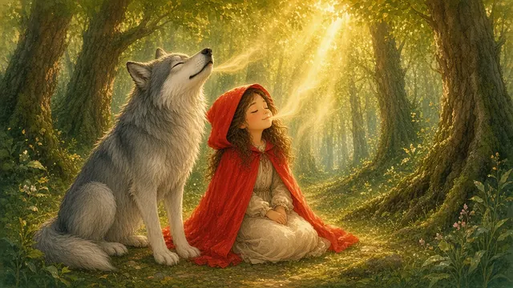
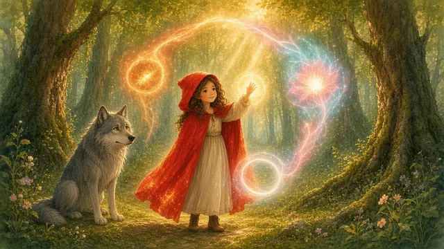
Elle lui montra comment respirer lentement, capter l’énergie des rayons du soleil, et programmer un cycle : mettre en route (ressentir la faim), changer (voir la lumière ), arrêter (choisir l’harmonie).
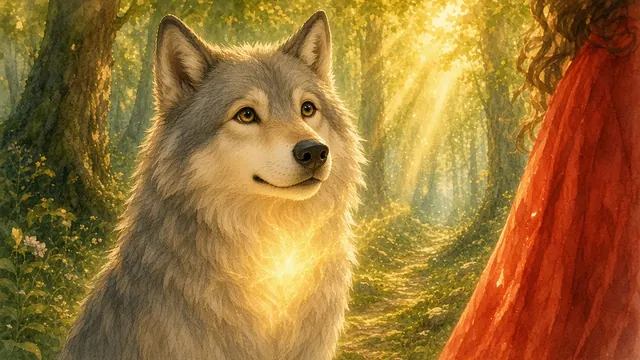
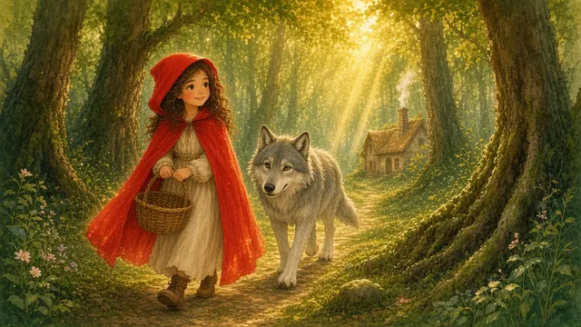
Le loup, émerveillé, sentit une chaleur nouvelle en lui. Ses crocs semblèrent fondre, et il murmura : « Je ne mangerai plus. Je serai ton guide, Rouge, vers la maison de ta grand-mère. »
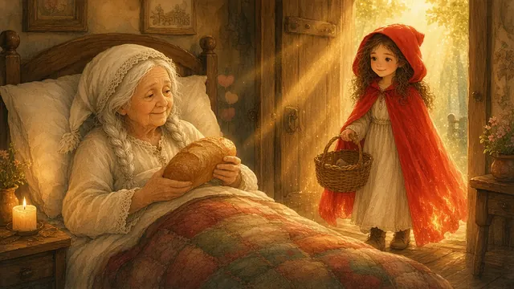
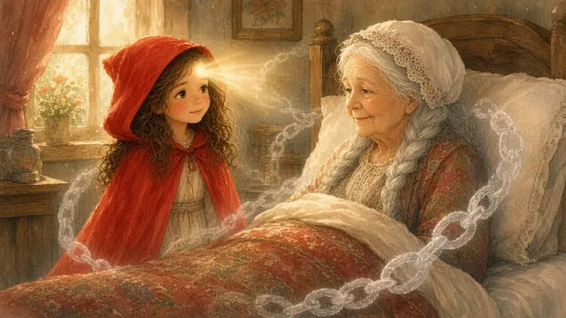
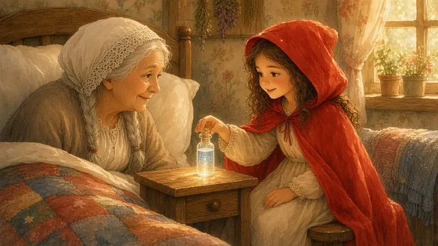
Quand Rouge arriva chez sa grand-mère, elle trouva la vieille femme alitée, pâle, tenant une miche de pain qu’elle n’avait pas la force de manger. Rouge observa et perçut que sa grand-mère était enchaînée à une vieille croyance : manger du vivant pour survivre. Elle s’assit à son chevet, posa la fiole d’eau scintillante sur la table, et dit doucement : « Grand-mère, tu n’as pas besoin de ce pain. Regarde avec moi. »
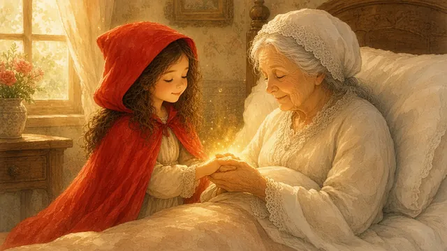
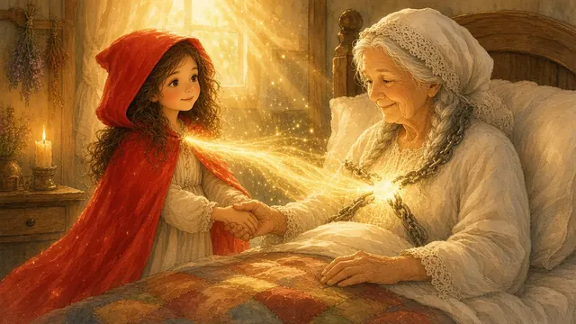
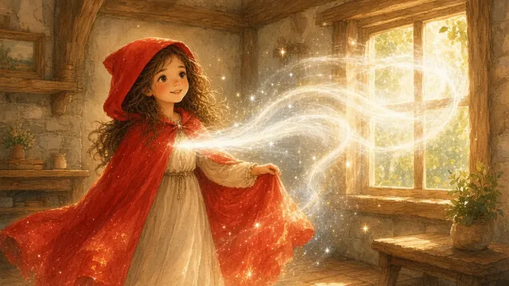
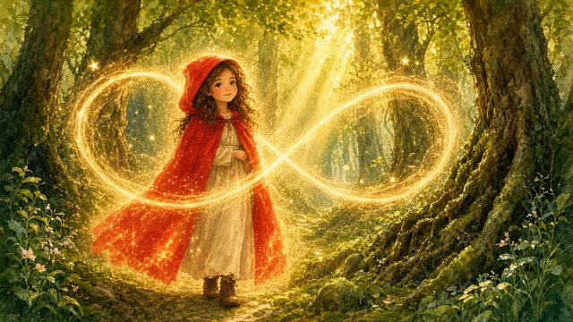
Rouge prit la main de sa grand-mère et l’invita à observer . Ensemble, elles fermèrent les yeux, et Rouge partagea sa lumière . « La lumière est en toi, grand-mère. Elle te nourrit sans arracher la vie. Laisse aller la pensée que manger te sauve. » À cet instant, une immense force entra en Rouge, comme un souffle d’éternité. Elle réalisa qu’en se nourrissant de lumière , elle pouvait vivre éternellement – son corps, son esprit, tout son être vibraient d’une énergie sans fin.
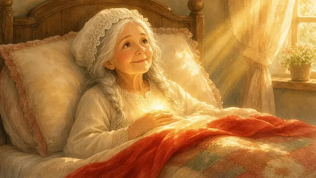
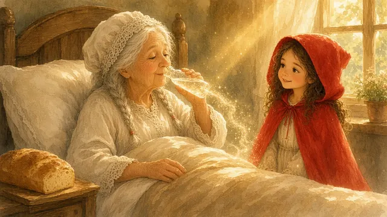
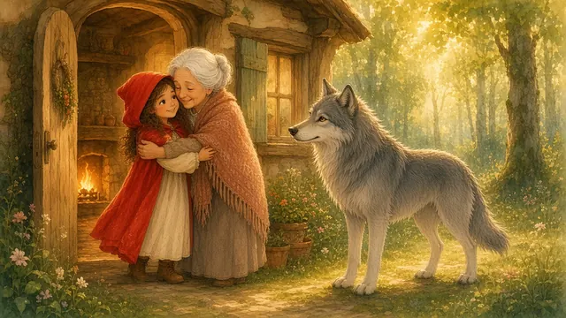
La grand-mère, touchée par cette lumière , sentit son cœur s’alléger. Une lueur douce illumina ses yeux, et elle murmura : « Rouge, je vois… Moi aussi, je peux être éternelle. Je n’ai plus besoin de manger du vivant. » Elle lâcha le pain, but une gorgée de l’eau scintillante, et son visage s’éclaira d’un sourire. Le loup, qui les regardait depuis l’entrée, hocha la tête, comme s’il comprenait lui aussi cette vérité.
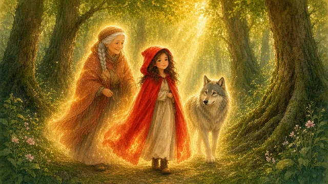
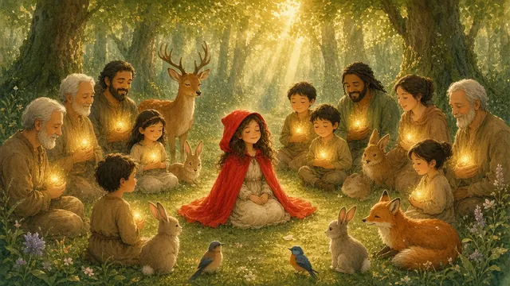
De ce jour, Rouge, le loup, et la grand-mère devinrent des gardiens de la forêt. Rouge enseigna aux animaux et aux villageois comment capter la lumière , programmer leurs cycles avec amour, et vivre sans arracher la vie.
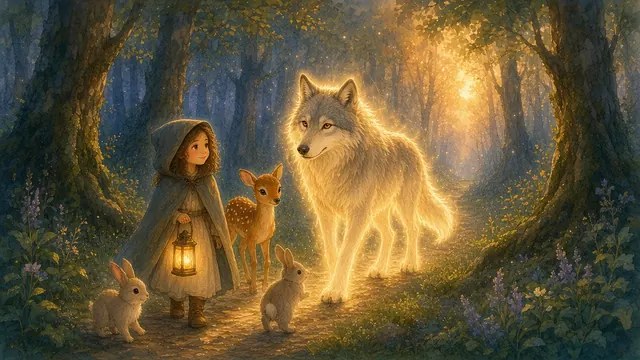
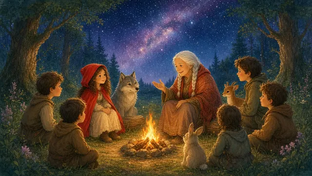
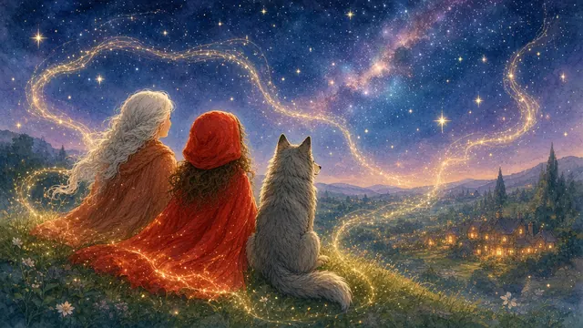
Le loup, libéré de son programme, guida les âmes perdues vers la paix. Et la grand-mère, forte et éternelle, raconta des histoires de lumière sous les étoiles. Ensemble, ils reprogrammèrent l’univers, tissant une harmonie où la vie ne se nourrissait plus de mort, mais d’amour infini.
FinThe End
Ce conte est aussi une chanson. Écoute-la en entier.This tale is also a song (in French). Listen to it in full.
« Je suis autour. Je suis déjà dans le Vrai pur. »“I am around. I am already in the pure True.”